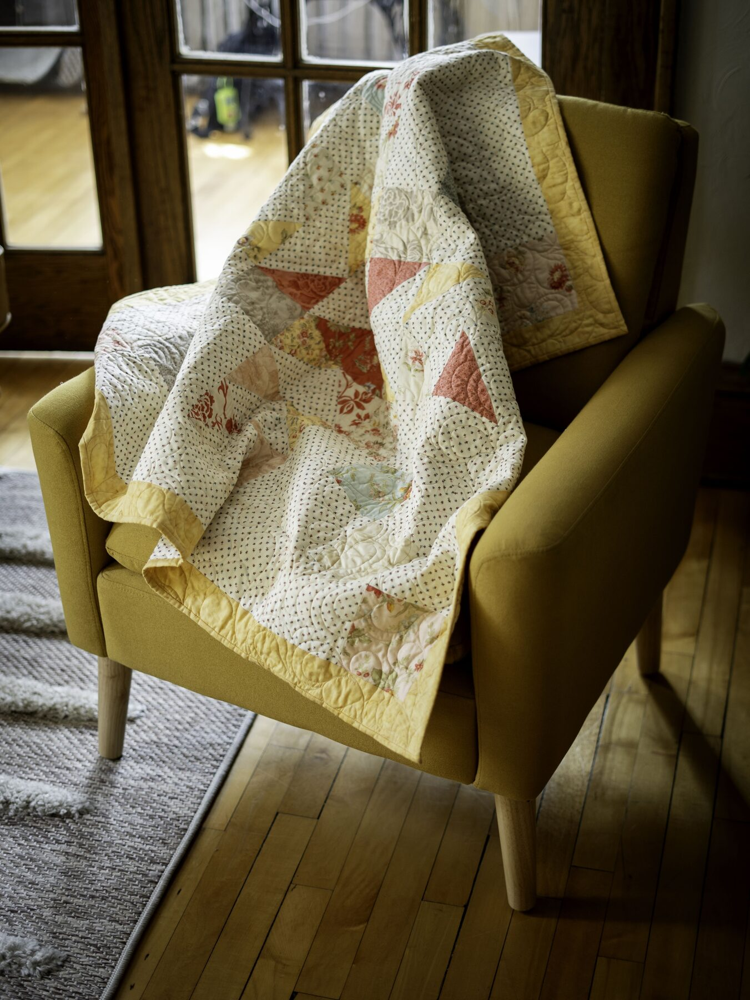
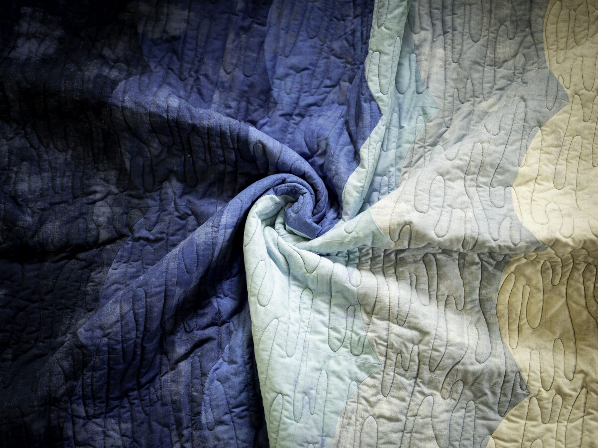
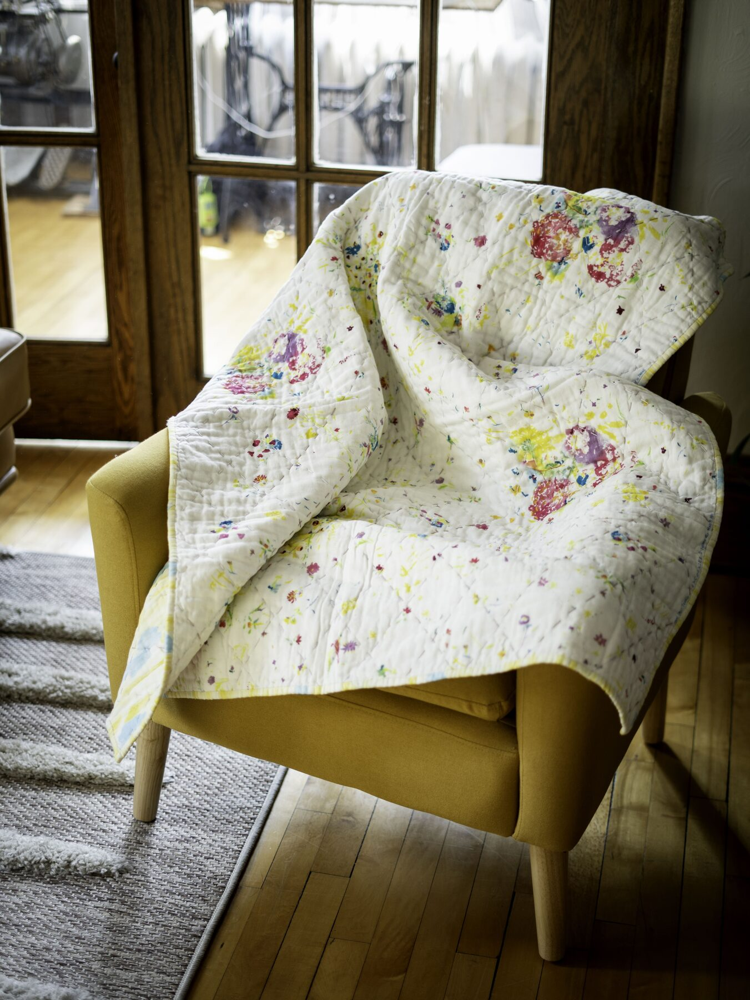
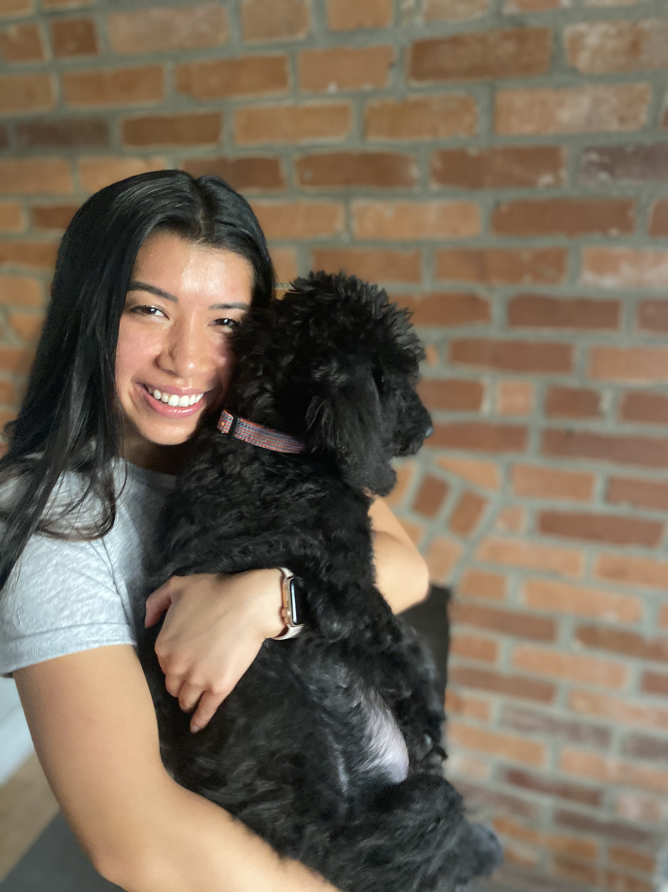

Featured
Featured
Black and White Throw Quilt
Bold contrast, modern geometry, and timeless comfort.
Thoughtfully designed quilts made with care, color, and comfort— created to bring warmth and beauty into everyday life.


Every NiNi-Q quilt blends contemporary design with the comfort and character of something handmade. Each piece is carefully constructed to become part of your home, your memories, and your story.
Featured
Bold contrast, modern geometry, and timeless comfort.

Calming blue tones flow together in a soft, cozy finish.

Airy floral gauze finished with hand-stitched diamond quilting.

NiNi-Q began with Jennifer’s love for creativity, craftsmanship, and creating meaningful pieces for the people around her.
From selecting fabrics to completing the final stitch, each quilt reflects patience, care, and an attention to detail that cannot be replicated by mass production.
“Professionally designed. Handcrafted with intention. Made to be treasured.”Read Jennifer’s Story
Share your colors, inspiration, preferred size, and vision. We’ll begin a conversation about creating a meaningful quilt designed specifically for you.
Request a Custom QuiltMore than something beautiful for your home— a NiNi-Q quilt is something meaningful to hold onto.
Explore the Collection